| 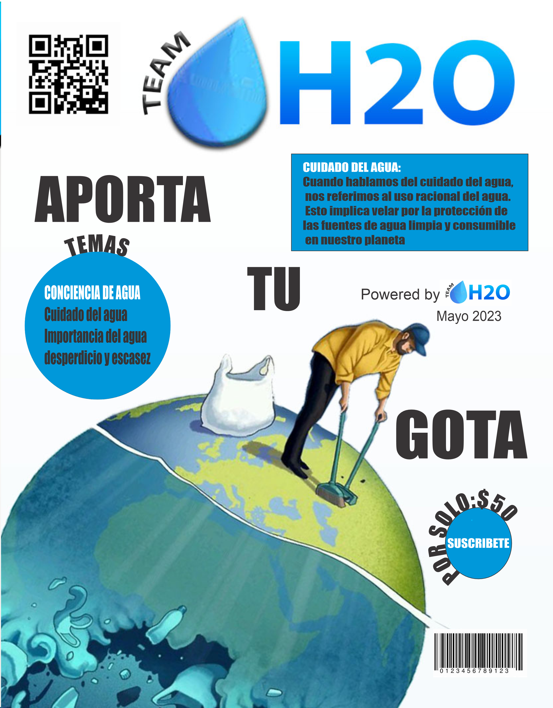 |
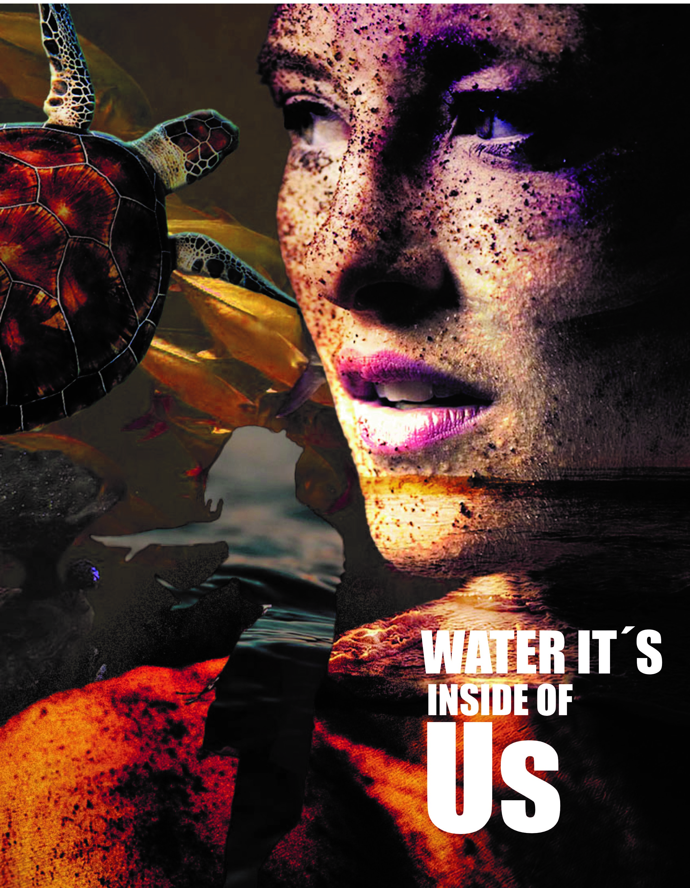 |
| 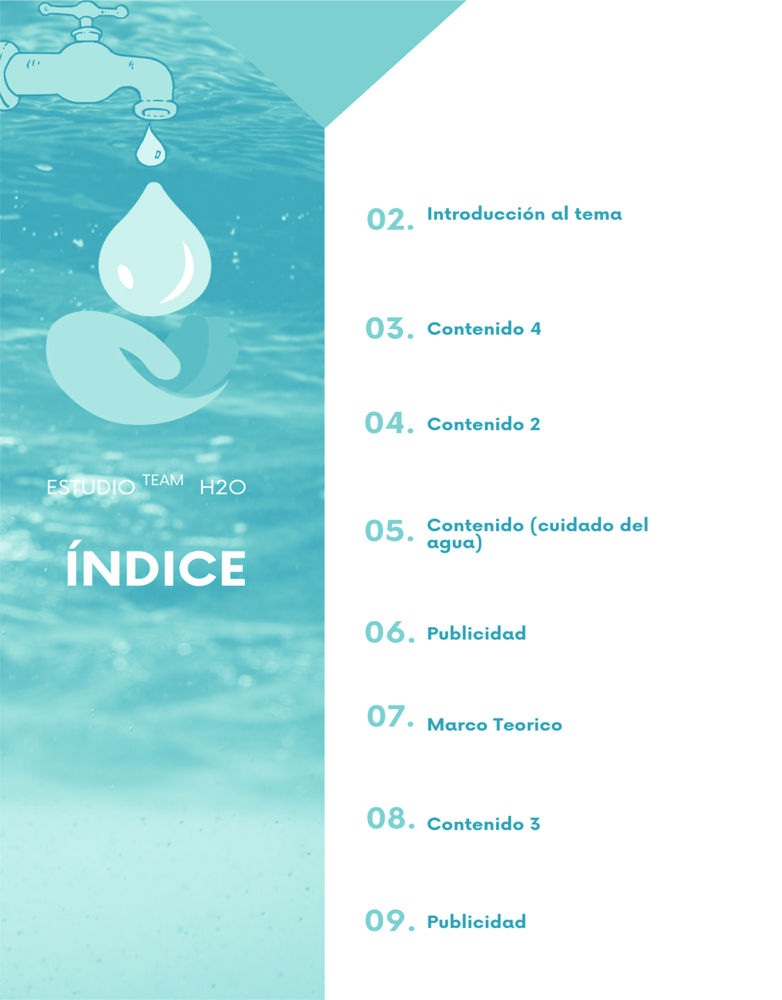 |
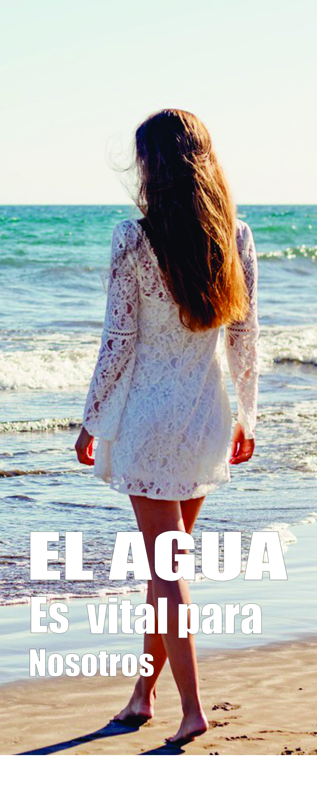
H2O team.29/05/23 Introducción El agua, ese recurso vital y omnipresente en nuestro planeta, es esencial para la vida tal como la conocemos. Cubriendo aproximadamente el 70% de la superficie de la Tierra, este líquido transparente, incoloro e insípido desempeña un papel fundamental en numerosos procesos biológicos, geológicos y ambientales.
El agua es conocida por su capacidad de disolver una amplia variedad de sustancias, lo que la convierte en un solvente universal. Además de su importancia para los organismos vivos, el agua también desempeña un papel clave en la configuración de nuestro planeta. A través de la erosión, la sedimentación y la acción de los glaciares, el agua ha esculpido paisajes impresionantes, creando valles, cañones y montañas a lo largo de millones de años.
El propósito es promover el cuidado del agua a través de plataformas de internet, debido a la gran escasez que se ha generado a lo largo de los últimos años, pues a pesar de la aparente abundancia de agua en la Tierra, solo una pequeña fracción es agua dulce disponible para el consumo humano. Este recurso preciado enfrenta desafíos significativos, como la contaminación, el agotamiento de acuíferos y el cambio climático, que amenazan su disponibilidad y calidad en muchas regiones del mundo. En resumen, el agua es un elemento esencial para la vida en nuestro planeta. Como objetivo principal es disminuir el desperdicio de agua, el cual se cumplirá por la promoción en hacer conciencia de los problemas que genera la poca disponibilidad de agua. |
| 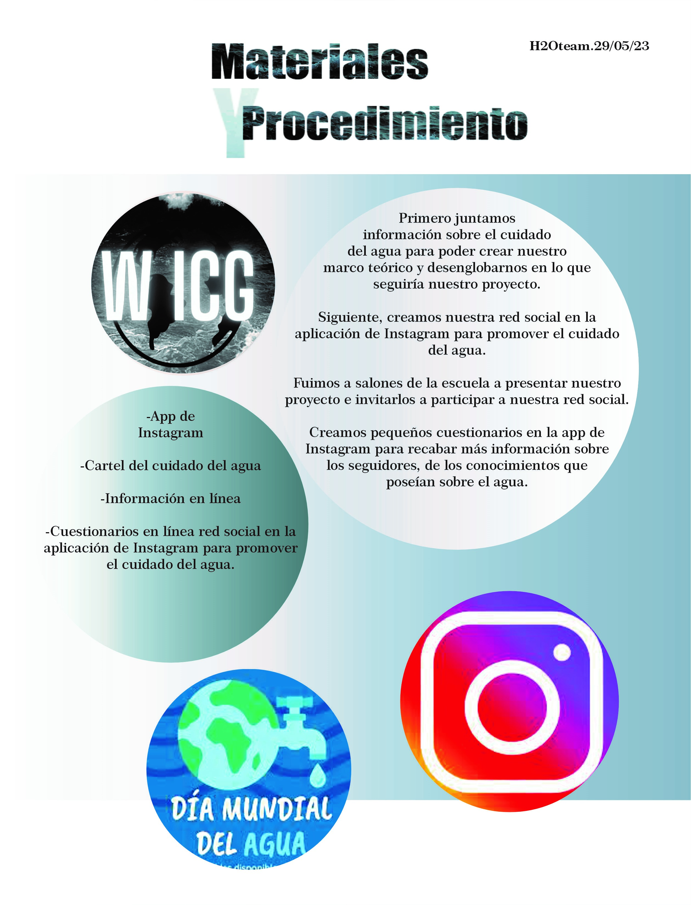 |
MARCO Teórico Tema: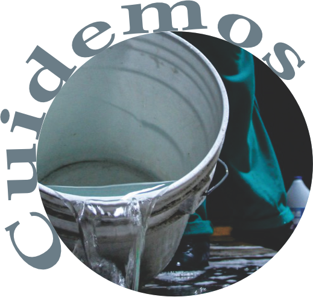El cuidado del agua Hipótesis: La falta del cuidado de agua se debe a que no hay factores promovedores de ello. Objetivo: Disminuir el desperdicio de agua Objetivos específicos: Disminuir el desperdicio de agua a través de una plataforma tecnológica. Promover el cuidado por medio de carteles digitales y otros que estarán presentes en la escuela.
El agua es un recurso esencial para la vida en el planeta. Es fundamental para la supervivencia de los seres humanos, los animales y las plantas. Además, el agua desempeña un papel clave en diversos sectores, como la agricultura, la industria, la generación de energía y el mantenimiento de los ecosistemas. El desperdicio de agua es actualmente uno de los mayores problemas de la sociedad, principalmente en las grandes urbanizaciones. De acuerdo con un informe de UNICEF de 2019, uno de cada tres personas en el mundo no tiene acceso al agua potable; en tanto, mil niños perecen todos los días por la falta del recurso. La contaminación del agua es un problema ambiental de gran envergadura que afecta a cuerpos de agua dulce, como ríos, lagos, acuíferos y aguas subterráneas, así como a los océanos y mares. Se refiere a la introducción de sustancias o compuestos perjudiciales en el agua, ya sea de origen natural o resultado de actividades humanas, que alteran su calidad y amenazan la salud de los ecosistemas acuáticos y las comunidades que dependen de ellos. Las fuentes de contaminación del agua son diversas y abarcan desde vertidos industriales y
H2O team.29/05/23 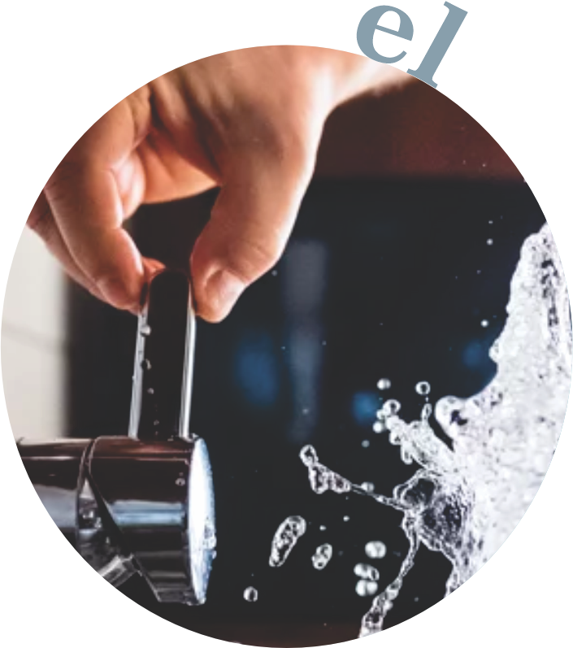 agrícolas hasta descargas de aguas residuales no tratadas, derrames de petróleo, residuos químicos y plásticos. Estos contaminantes pueden tener efectos perjudiciales tanto a corto como a largo plazo, tanto para la vida acuática como para los seres humanos que consumen agua contaminada. La contaminación del agua, ya sea por vertidos industriales, residuos agrícolas, descargas de aguas residuales sin tratar o derrames de petróleo, puede tener efectos devastadores sobre los ecosistemas acuáticos y la vida silvestre que depende de ellos. Cuando los contaminantes ingresan al agua, pueden tener una serie de efectos negativos en los organismos vivos. Esto puede tener un impacto en cascada en la cadena alimentaria, ya que muchos organismos dependen de otros para su supervivencia. Otro problema derivado de la contaminación del agua, es la desertificación la cual es un proceso de degradación del suelo que conduce a la pérdida de productividad y la transformación de tierras fértiles en áreas áridas o semiáridas. Si bien la contaminación del agua en sí misma no causa directamente la desertificación, puede desempeñar un papel importante al agravar las condiciones que
|
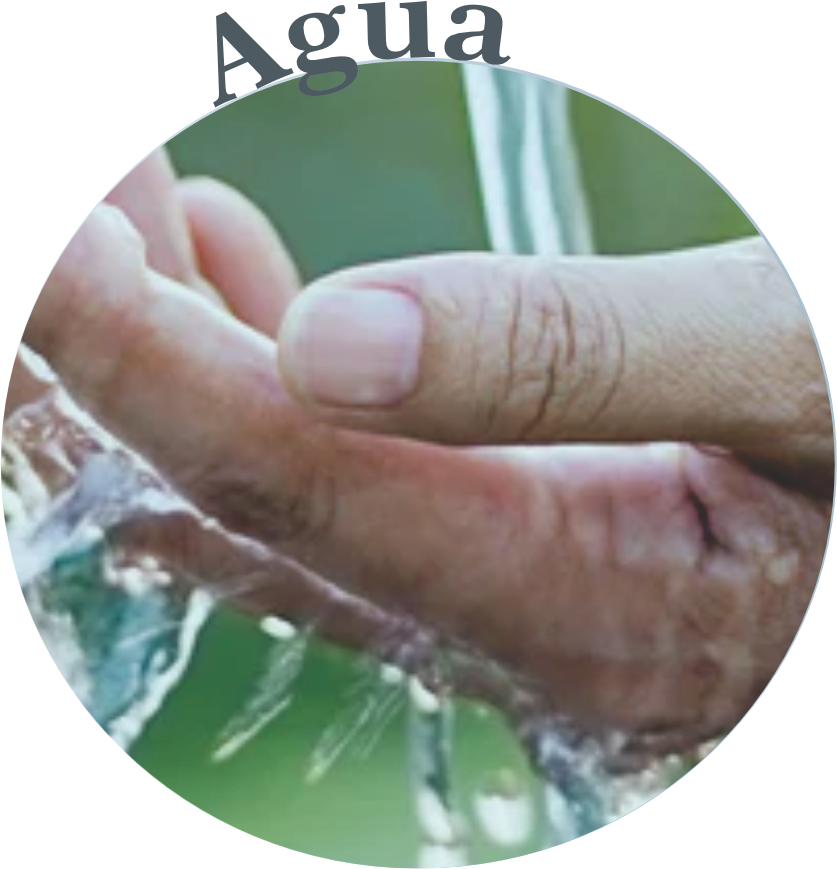 contribuyen a este proceso. La contaminación del agua puede afectar negativamente la calidad y disponibilidad del agua necesaria para mantener la vegetación y los ecosistemas saludables. Cuando los cuerpos de agua, como ríos y lagos, se ven afectados por la contaminación, el suministro de agua dulce se reduce y puede volverse inadecuado para el riego de cultivos y el mantenimiento de la vegetación en las áreas circundantes. Relacionado con la contaminación del agua también nos encontramos con la lluvia ácida la cual puede tener un impacto significativo en la calidad del agua. Cuando los contaminantes emitidos por las actividades humanas, como las emisiones de dióxido de azufre (SO2) y óxidos de nitrógeno (Nox), se mezclan con el vapor de agua en la atmósfera, pueden formar ácidos fuertes, como el ácido sulfúrico (H2SO4) y el ácido nítrico (HNO3). Cuando la lluvia ácida cae sobre la superficie de la Tierra, puede fluir hacia los cuerpos de agua, como ríos, lagos y acuíferos subterráneos. El agua ácida se mezcla con los cuerpos de agua, lo que resulta en una disminución del pH del agua. La lluvia ácida puede ser tóxica para los organismos acuáticos, como peces, anfibios, insectos acuáticos y plancton. Un pH bajo puede alterar su
fisiología, dificultar su reproducción y afectar su supervivencia. Además, la lluvia ácida puede movilizar metales pesados tóxicos presentes en el suelo y sedimentos, lo que agrava aún más los impactos negativos en los ecosistemas acuáticos. Si la lluvia ácida afecta las fuentes de agua potable, puede comprometer la calidad del agua utilizada para consumo humano. El pH bajo puede hacer que el agua sea corrosiva, lo que puede dañar las tuberías y los sistemas de suministro de agua, y también puede provocar la liberación de metales tóxicos de las tuberías y las infraestructuras. En conclusión, la contaminación del agua es un problema ambiental grave que afecta a nuestro planeta y sus habitantes de diversas maneras. La actividad humana ha llevado a la emisión de contaminantes que se vierten en ríos, lagos y acuíferos subterráneos, afectando la calidad del agua y comprometiendo la salud humana, la biodiversidad y los ecosistemas acuáticos.La contaminación del agua puede causar desertificación, extinción de especies, lluvia ácida y otros efectos negativos en el medio ambiente. Además, puede afectar la calidad del agua potable y la seguridad alimentaria de las personas. Es necesario tomar medidas para reducir la contaminación del agua, como la implementación de leyes y regulaciones más estrictas, la promoción de tecnologías más limpias, la educación sobre el uso responsable del agua y la colaboración entre los gobiernos, las comunidades y las empresas para abordar este problema de manera efectiva
|
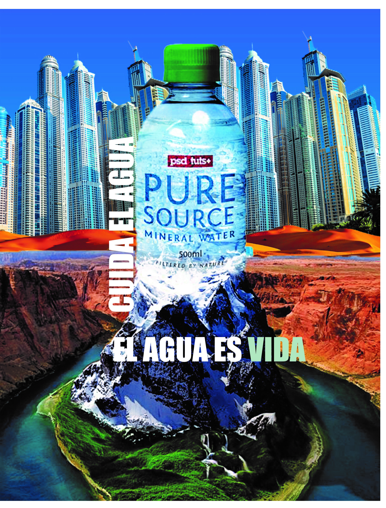 |
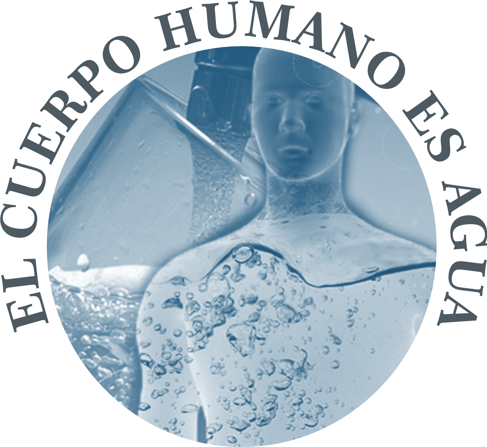
H2O team.29/05/23
¿Sabes cuánta agua es necesaria para producir un kilo de arroz? No te lo vas a creer, pero nada menos que 5.000 litros. La ONU dice que la huella hídrica de la producción mundial está relacionada con la producción de alimentos en un 70%
El agua representa aproximadamente el 60% del peso corporal de un adulto promedio. Cada sistema y órgano en el cuerpo depende del agua para funcionar correctamente. Este es un componente esencial de las células, los tejidos y los órganos del cuerpo. Ayuda a mantener la temperatura corporal, lubrica las articulaciones, protege los tejidos sensibles y actúa como medio para la mayoría de las reacciones químicas en el cuerpo
Ayuda en la digestión y absorción de nutrientes. Las necesidades de agua de una persona pueden variar según diversos factores, como la edad, el peso, el nivel de actividad física y las condiciones ambientales. Se recomienda consumir alrededor de 2 litros (8 vasos) de agua al día como punto de partida, pero las necesidades individuales pueden variar.
|
RESULTADOS
los resultados de este proyecto fueron realmente como esperábamos, ya que cumplimos con todos los objetivos que nos planteamos al inicio de este proyecto que era empezar a tomar acción y conciencia sobre nuestro uso del agua y en base a los resultados vistos nos dimos cuenta que la comunidad tomo muy bien nuestro mensaje porque empezaron a hacer ciertos cambios que aunque sean mínimos aportan, un alumno nos comento que con base a el contenido que estuvimos publicando en instagram el empezó a implementar un sistema con cubetas cada que lluvia y esa agua la ocupaba para sus plantas y para bañar a sus perros ,que por muy simple que sea esta aportando su gota lo que nos hizo sentir muy bien, y en base a eso nos dimos cuenta que los alumnos mas jóvenes si les interesan estos temas solo que aveces no sabes como llegar a ellos y pensamos que con carteles o folletos pero es una generación y un mercado muy diferente ya que ellos les ponen mas atención a publicaciones y a videos cortos, y ese contenido fue el que las personas mas notaron aún mas que los carteles
CONCLUSIONES
Las conclusiones de este trabajo fue que este tema del agua es realmente muy importante en las nuevas generaciones como nosotros ya que aveces abusamos del consumo desmedido del agua y no nos damos cuenta del gran daño que les estamos haciendo a nuestro ambiente y como nos va repercutir a nosotros y a generaciones futuras, por eso este tipo de campañas son muy importantes debido a que hay veces que la población esta desinformada y gracias a estos proyectos podemos generar un cambio en la forma de pensar de las personas que eso es un gran avance , porque todos los cambios de acciones comienzan a partir de un pensamiento que se convierte en algo mas grande, y en base a nuestros resultados nos dimos cuenta que la forma mas efectiva de querer compartir una campaña es por redes ya que tienes en alcance global RESULTADOS
Y CONCLUSIONES 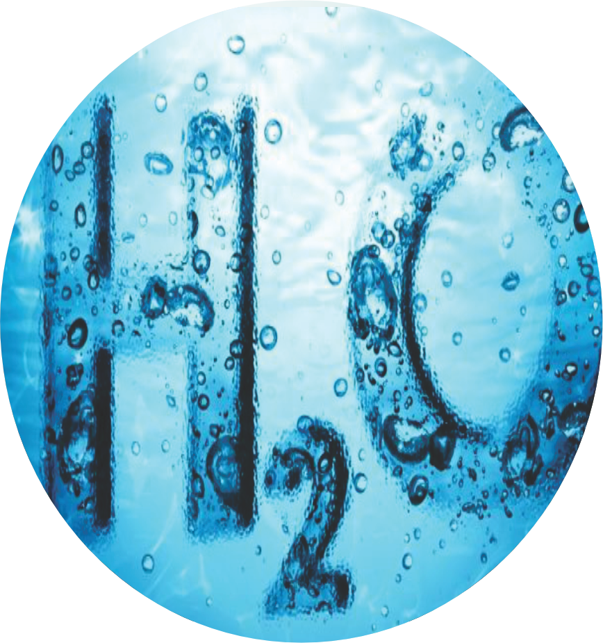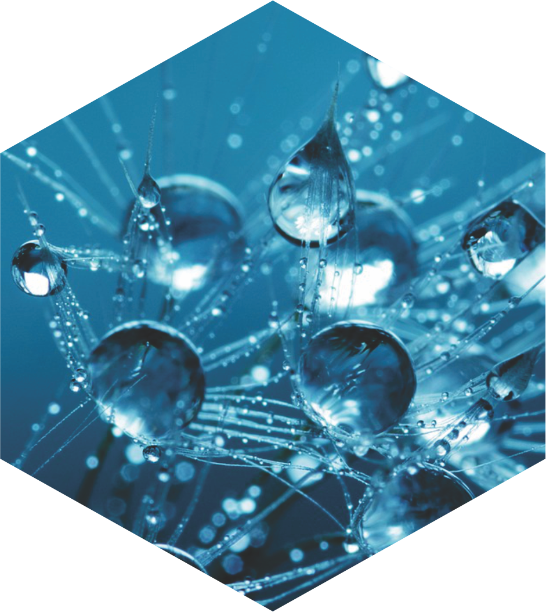 |
| 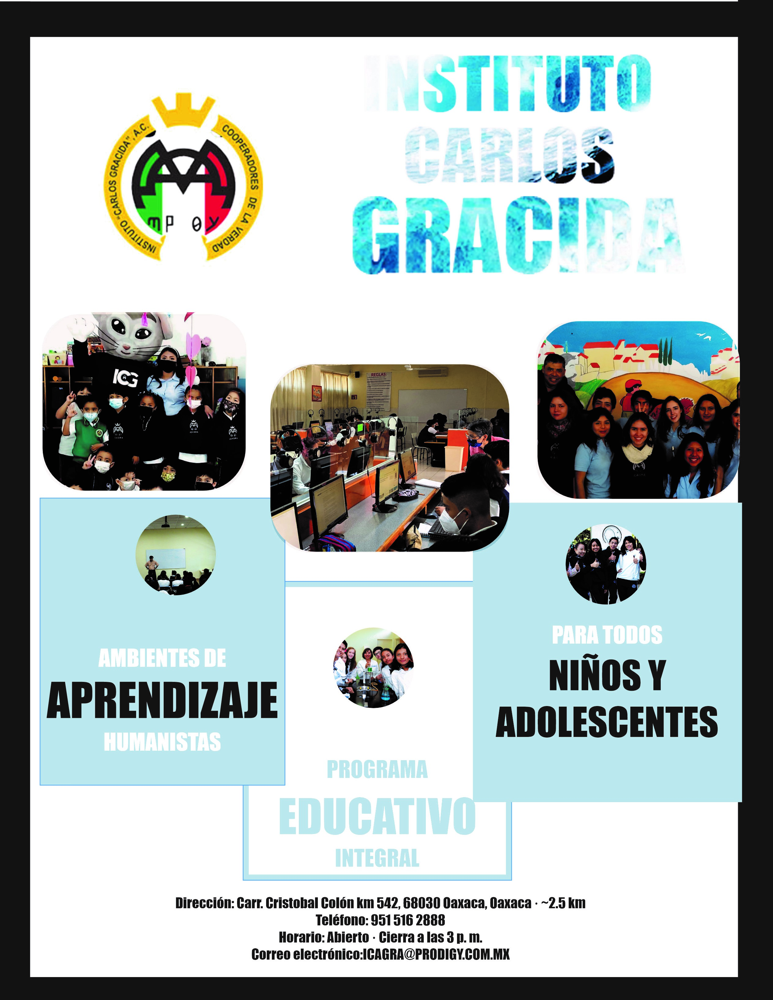 |
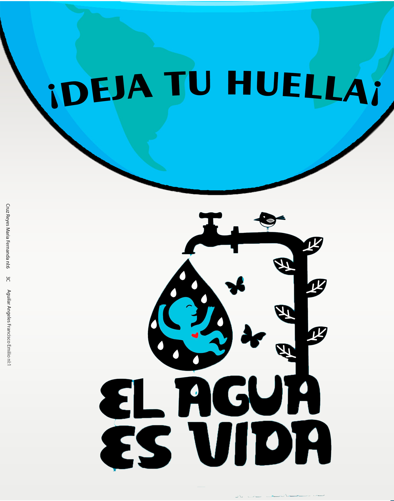 |